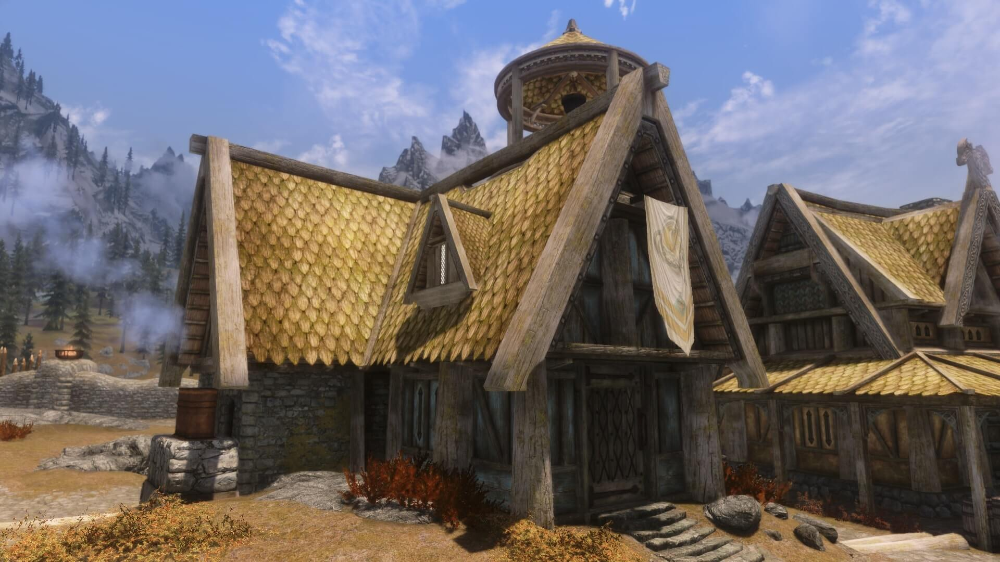

Дом теплых ветров

Это один из домов, доступных для покупки. Расположен в городе Вайтран. Самый дешёвый дом, купить который можно после выполнения задания «Ветреный пик». Стоимость — 5000 септимов, стоимость улучшений — 1800 (суммарно — 6800). Дом находится сразу же после Дома воительницы, если идти от городских ворот.
В доме изначально находится только одна двуспальная кровать и один сундук рядом с ней — это на верхнем этаже дома. Однако, даже после покупки всех улучшений для дома, там не предусмотрено наличие пентаграммы душ. Можно пользоваться пентаграммой Фаренгара в Драконьем Пределе.
В целом ништяковый дом для начала игры или если вы не упарываетесь в зачарование, или если вам нужна только алхимка/детская в вашем приключении. 8 ништяков из 10
- Стоимость - 5000 септимов
- Стоимость с улучшениями - 6800 септимов
- Город - Вайтран
- Алхимическая лаборатория - да
- Стол зачарователя - нет
- Детская - вместо алхим. лабы